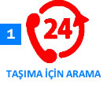

Paketleme Taşımacılığı

Eşyaların taşınması kadar paketlenmesi de oldukça önemlidir. Paketleme yaparken bazı konulara öncelik verilmesi gerekir taşınması gerekenler apartmanın merdiven boşlukları dikkate alınması ve yeteri büyüklükteki kutular tercih edilmelidir. Eşyanın fizik durumuna göre paketleme işinin yapılması ve gereken tüm hassasiyetin gösterilmesi gerekir. Öz Avcılar nakliyat olarak eşyalarınızı bölümlere ayırarak paketleme işlemini gerçekleştiriyoruz. Narin ve kırılacak eşyaları gerekli ambalaj poşetlerine sararak kırılmasını önlüyoruz. Herhangi bir sarsıntıda ya da çarpmada tek bir bardağınız bile kırılmaz. Bunun için mutlaka Öz Avcılar nakliyat firmasını seçin. Geri kalan tüm eşyalarınız tozlanmaması ve kirlenmemesi için büyük naylonlara sarılarak paketleme işlemi yapılır. Koltuk gibi kumaş içeren, deri gibi çabuk yırtılma özelliği olan eşyalarınız öncelikle streç naylon filmlerle kaplanır, daha sonra kalın örtülerle muhafaza edilir. Taşınma esnasında gözünüz asla arkada kalmasın. Paketleme konusunda gereken ne varsa firmamızın tecrübeli elemanları tarafından yapılır. Paketleme sırasında her eşyanıza ayrı bir özen gösteriyor, oluşabilecek olumsuzlukların önüne geçiyoruz. Öz Avcılar nakliyat firması olarak uzun yıllardır bu görevi layığı ile yerine getirdiğimiz düşünüyoruz. Bu zamana kadar paketleme ve taşımacılık konusunda müşterilerimizden her zaman övgü dolu sözcükler duyduk. Bu durumda işimize olan bağımız daha çok güçlendi. Büyük sevgi ile yürüttüğümüz nakliyat işimizi daha uzun yıllar sizlerin desteği ile ilerleteceğimizi düşünüyoruz. Eşyanız ne kadar büyük ve ağır olursa olsun onları da uygun koşullarda paketleme yaparak zarar görmelerini engelliyoruz. Taşıma sırasında oluşabilecek ve kazaya neden olabilecek durumlarda tüm zararı biz karşılıyoruz. Sigorta firmamız bu konu ile yakından ilgilenip asla sizi üzmeyeceklerdir. Müşterilerimizin bizden memnun kalması ve ihtiyaçları olduğunda tekrar bizi aramaları için hiçbir özveriden kaçınmıyoruz. Paketleme ve taşıma işi özen ister, duyarlılık ister ve en önemlisi ise karşı taraftan hissedilen güveni ister. Biz tüm bunların farkında olarak bu yola çıktık. Taşınma esnasında hiçbir olumsuzluğa yer vermiyoruz. Yıllarca büyük mutluluklarla dizdiğiniz eşyalarınızı artık bizim gibi güvenilir ellere emanet edebilirsiniz. Paketleme taşınmanın vazgeçilmez bir kısmıdır. Taşıma kadar paketlemenin daha büyük bir önemi vardır. Çünkü paketleme sırasında eşyanın ilk güvenliği sağlanır. Sonra kutulanır ve son sistem araçlarımızla eşyalarınızı güvenli bir şekilde teslim ediyoruz. Taşınma sırasında artık daha rahat olabilirsiniz. Öz Avcılar nakliyat kalitesine her zaman güvenebilirsiniz. Profesyonel kadromuzla aile ortamında eşyalarınızı taşımanın mutluluğunu yaşıyoruz. Paketleme esnasında taşıtmak istediğiniz tüm eşyalarınızı çok dikkatli bir şekilde ambalajlıyoruz. Yeni adresinize teslim ettiğimiz eşyaları yine sizlerin yanında paketlerinden çıkarıyoruz ve gösterdiğiniz yerlere yerleştiriyoruz. Bundan sonra sizin yanınızda Öz Avcılar nakliyat var. Taşınma kâbusu bizimle sona eriyor. Güvenin ve hassasiyetin tam adı Öz Avcılar nakliyat. Tüm eşyanızı toplamadan önce mutlaka bizi arayın . Farkı göreceksiniz…


SERVİS HİZMET PROSEDÜRÜ



Hizmetlerimiz
Referans
ADRES
Kemalpaşa Namık Kemal Cd. No:27 34204Bağcılar/İstanbul
TEL 1 : 0212 432 77 33
TEL 2 : 0212 432 77 34
CEP : 0532 414 52 77
info@ozavcilarnakliyat.com
www.ozavcilarnakliyat.com